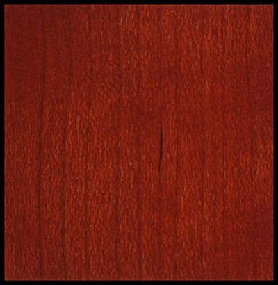

A cseresznye a rózsafélék (Rosaceae) közé tartozó Prunus nemzetség alnemzetsége. Cseresznye néven leggyakrabban a vadcseresznyefát, illetve annak valamely termesztett változatát, vagy annak csonthéjas gyümölcsét értik.
4-6m magas egyenes, 5-7 m szélleségű a törzse. A cseresznye az összes gyümölcsfaj közül legjobban szenved a talaj levegőtlenségétől. Nagyon alacsony humusztartalmú talajokra nem érdemes cseresznyét telepíteni.
Szíjácsa keskeny, sárgás vagy halvány vöröses, gesztje világos vörösesbarna, barnás-zöldes csíkoltsággal. A csíkok a korai pásztában jelentkeznek. Az edények a korai pásztában sűrűek, likacsgyűrűt alkotnak, de a késői pásztában szórtan helyezkednek el. Bélsugarai kicsik, szabad szemmel csak a sugármetszeten láthatók vékony csíkok formájában.
| Tulajdonság | Érték |
|---|---|
| Rönkhossz | 6...10m |
| Rönkátmérő | 06...1,0m |
| Sűrűség | 0,57 g/cm3 |
| Zsugorodás sugárirányban | 5,0% |
| Zsugorodás húrirányban | 8,7% |
| Keménység - Rostra merőleges | 31 MPa |
| Keménység - Rosttal párhuzamos | 59 MPa |
| Merevség | 11100 MPa |
| Nyomó szilárdság | 49 MPa |
| Hajlító szilárdság | 95 MPa |
| Nyíró szilárdság | 15 MPa |